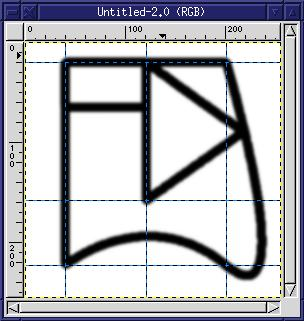
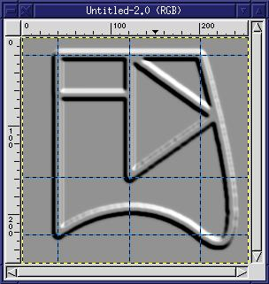
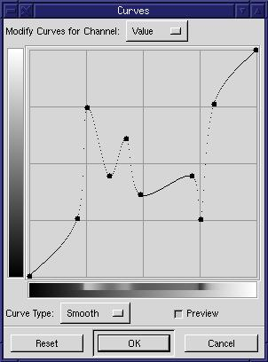
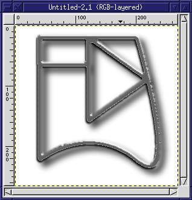

More...
 |
GIMP Tip: 3D metal and plastic borders
This is a little trick for creating 3D frames with a metallic or shiny
plastic look. The trick is pretty easy and once you've done it a
few times it will become second nature.
-
Select a thick, solid brush. I used Circle (09). This brushes
will create thick frames. Thin brushes create thin frames.
Don't use feathered brushes. We need a solid outline at this point.
-
Make sure the foreground is black and the background is white.
-
Outline a selection using the Bezier and Marquee tools.
-
Stroke the selections. You can do this in multiple steps. I
created three separate selections, stroking each one individually.
-
Blur the image using the Gaussian Blur with a horizonatal and vertical
radius of between 1.5 and 5 units.
|
 |
-
Use CTRL-A to select the entire image. Copy it to a named buffer
(Shift-CTRL-C). We'll call it the "frame-outline" buffer.
-
Unselect the image with SHIFT-CTRL-A.
-
Invert it - the frame becomes white and the background black.
-
Emboss the image, using a Depth of between 3 and 10. You can pick
whatever azimuth and elevation looks good to you.
|
 |
-
Use the curves filter to create the metallic affect. The figure at
right shows the settings I used. I only changed the "Value" levels,
which apply to all three of the Red, Green, and Blue channels at the same
amount.
|
 |
-
Add a layer mask to the image. At this point there should only be
one layer in the image. Click on the mask area in the Layers and
Channels dialog to make it the active layer. You will probably need
to add an alpha channel to the layer first. You can do that with
the Layers and Channels dialog layer menus (click the right mouse button
over the name of the layer to display the menu).
-
Paste the "frame-outline" buffer into the mask. Anchor it to the mask.
-
Invert the mask. It should be black with the frame outline in white
now.
-
Apply the mask.
|
 |
Thats it. You now have a metallic, or perhaps shiny plastic looking,
frame. I added a white background and a adrop shadow to make it stand
out a little more. You can use the curves filter again to add color
to the frame. The curves filter does some amazing effects if you
make the curves with drastic changes in direction (steep curves).
One other hint: if you look at the edges of the the frame where
it is not straight, such as the right side along the curves, the frame
is sort of rough. This problem can be reduced using better settings
in the curves dialog box. Don't get confused - the problem I described
happens on curves of the frame, but the curves dialog is
just related to adjustments to colors in the image. The dialog isn't
related to non-straight lines.